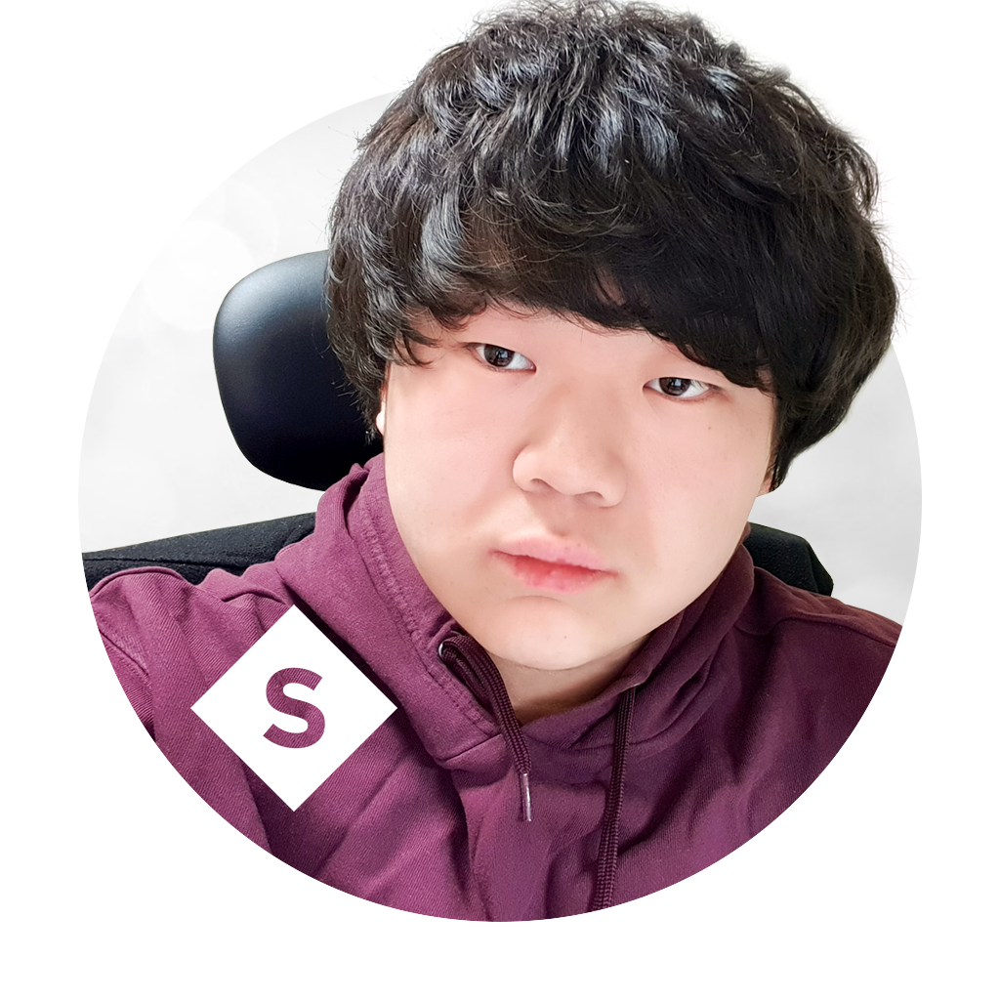

소개
안녕하세요, 서강대학교 컴퓨터공학과 학부 박수현입니다.
사이트 방문을 환영합니다.
저는 컴퓨터공학의 많은 분야, 특히 알고리즘에 큰 관심을 가지고 있습니다.
이 사이트는 2019년 1학기 컴퓨터공학 설계 및 실험 I의
Web-1 실험입니다. 제 다른 활동은
블로그,
포트폴리오,
GitHub에서도 확인하실 수 있습니다.
Experiences
-
서강대학교 융합소프트웨어전공
SCSC
동계 방학 코딩 워크샵
조교, 2019. 01 - 2019. 02
-
하이퍼커넥트
Hyper-X / Android 소프트웨어 엔지니어 (인턴), 2018. 06 - 2018. 08
Education
-
서강대학교 공학부 컴퓨터공학과
학부 2학년, 2018. 03 - 현재
-
Sogang ACM-ICPC Team
학회원, 2018. 03 - 현재
학회장, 2019. 01 - 현재
-
SGCC Sogang Computer Club
동아리원, 2018. 03 - 현재
임원, 2019. 02 - 현재
-
Aioli
회원, 2018. 11 - 현재
-
서강만화창작부
동아리원, 2018. 03 - 현재
Honors and Awards
-
서강대학교 공학부 2018-1학기 Dean's List
2018. 11. 29
-
2018 서강대학교 프로그래밍 대회 최우수상 (Master Division 1위)
2018. 11. 23
-
제 2회 에너지기술 창의 아이디어 공모전 산업통상자원부 장관상 (고등부 1위)
2015. 11. 13